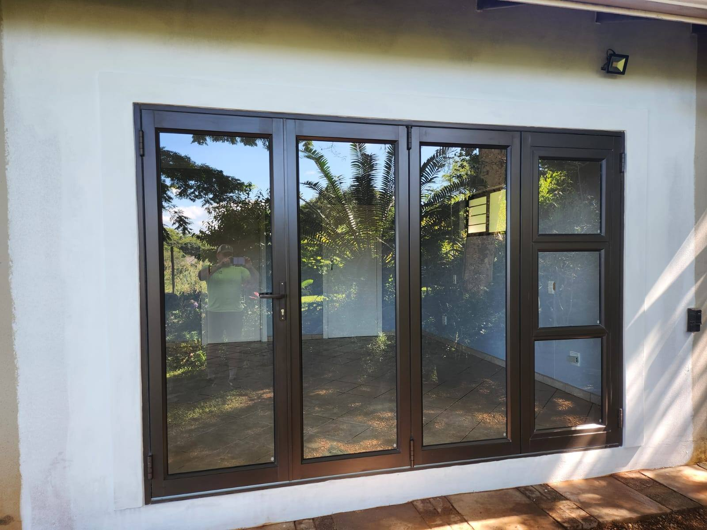
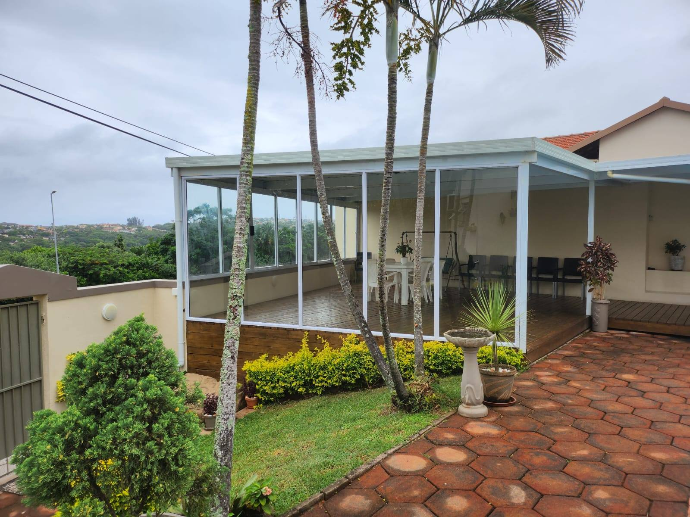
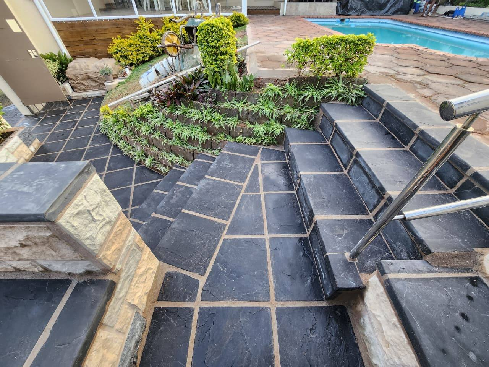
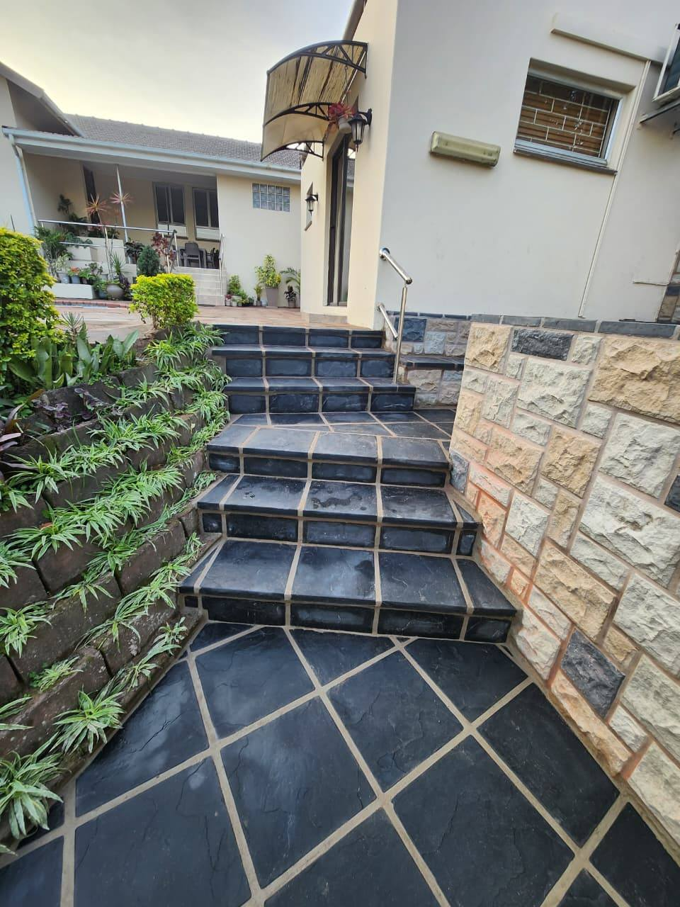
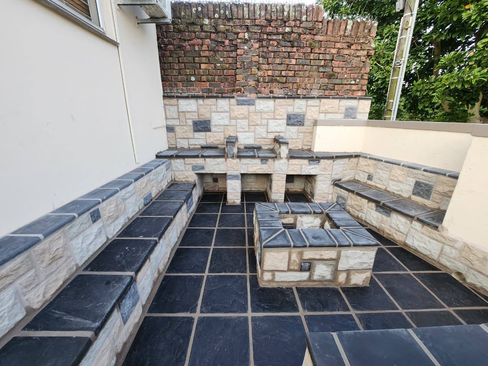
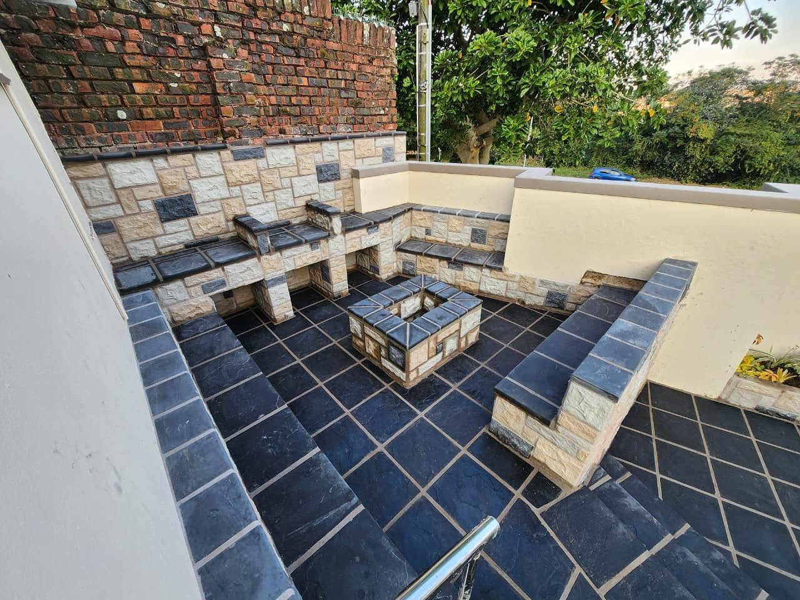
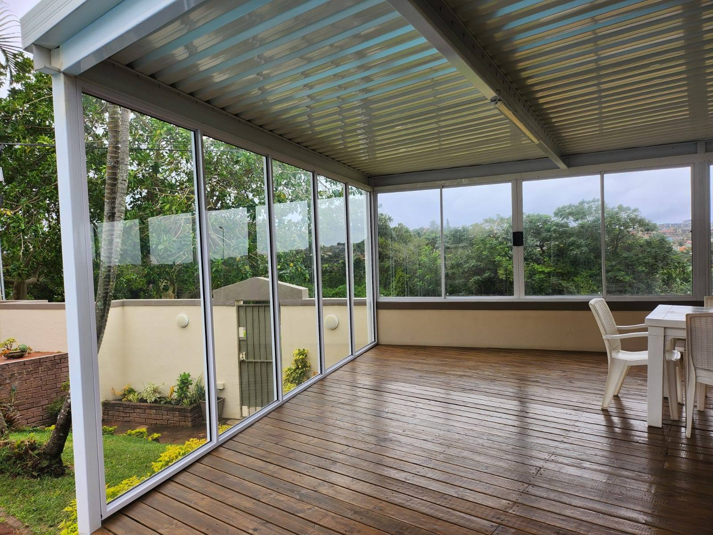

DON'S Building, Paving & Installations - building, renovations, paving and installations in Durban.
Durban, KwaZulu-Natal • Building & Renovations & Outdoor Projects
Quality you can trust. Building, paving and installations that bring your next project to life.
We build. We renovate.
We deliver.
Building, paving and installations in Durban. From an outdoor transformation to a refreshed interior, speak to Don about the work your property needs.
Paving & Outdoor
Driveways, walkways, patios and pool surrounds, with clean lines and a finish that complements your home.
Explore →Building & Renovations
New spaces, home extensions and renovations, from brickwork and plastering to the final coat of paint.
Explore →
Installations & Finishing
Practical improvements for everyday living, including aluminium doors and windows, tiling, kitchens and bathrooms.
Explore →
Awnings & Maintenance
Sheltered outdoor living spaces and the repairs that keep your property looking good and working well.
Explore →From bare ground
to a place to gather.
Follow a Don's outdoor project as it takes shape. Ground preparation, wall construction, stone cladding and paving come together in a finished entertainment space.
- Groundwork and a clear layout
- Stone-clad walls and built-in seating
- Paving, steps and finishing details
Your property.
Our attention to detail.
A considered start
Talk through your ideas, the site and the finish you want before the work begins.
Building to finishing
Bring your building, renovation, paving and installation requirements into one conversation.
Work you can see
Explore our project photos and on-site videos to get a feel for the work we do.
Speak directly to Don
Call or WhatsApp Don to discuss your project and arrange a quote.
The difference is in the finish.
Outdoor spaces, renovations and installations from Don's own project collection.





Real projects. Real progress.
Watch our team work on paving, renovation and finishing projects.
What is your
next project?
Send your ideas, photos and location to Don. We can discuss the scope and arrange a site visit.